一、CSS高级
1. 精灵图
一个网页中往往会应用很多小的背景图像作为修饰，当网页中的图像过多时，服务器就会频繁地接收和发送请求图片，造成服务器请求压力过大，这将大大降低页面的加载速度。
因此，为了有效地减少服务器接收和发送请求的次数，提高页面的加载速度，出现了 CSS 精灵技术（也称 CSS Sprites、CSS 雪碧）。
核心原理：将网页中的一些小背景图像整合到一张大图中 ，这样服务器只需要一次请求就可以了。
精灵图的使用：
- 精灵技术主要针对于背景图片使用。就是把多个小背景图片整合到一张大图片中。
- 移动背景图片位置， 此时可以使用
background-position。 - 移动的距离就是这个目标图片的
x和y坐标。一般情况下都是负值（网页中的坐标： x 轴右边走是正值，左边走是负值， y 轴往下走是正值，往上走是负值。）
2. 字体图标
字体图标使用场景：主要用于显示网页中通用、常用的一些小图标。
精灵图图片文件比较大、图片本身放大和缩小会失真、一旦图片制作完毕想要更换非常复杂。
此时，有一种技术的出现很好的解决了以上问题，就是字体图标 iconfont。字体图标可以为前端工程师提供一种方便高效的图标使用方式，展示的是图标，本质属于字体。
2.1 字体图标的优点
- 轻量级：一个图标字体要比一系列的图像要小。一旦字体加载了，图标就会马上渲染出来，减少了服务器请求；
- 灵活性：本质其实是文字，可以很随意的改变颜色、产生阴影、透明效果、旋转等；
- 兼容性：几乎支持所有的浏览器，请放心使用。
总结：
- 如果遇到一些结构和样式比较简单的小图标，就用字体图标。
- 如果遇到一些结构和样式复杂一点的小图片，就用精灵图。
2.2 字体图标的使用
推荐下载网站：
icomoon 字库 http://icomoon.io。IcoMoon 成立于 2011 年，推出了第一个自定义图标字体生成器，它允许用户选择所需要的图标，使它们成一字型。该字库内容种类繁多，非常全面，唯一的遗憾是国外服务器，打开网速较慢。（现在部分要付费）
阿里 iconfont 字库 http://www.iconfont.cn 。这个是阿里妈妈 M2UX 的一个 iconfont 字体图标字库，包含了淘宝图标库和阿里妈妈图标库。可以使用 Al 制作图标上传生成。重点是，免费！
2.2.1 IcoMoon
- 选择字体并下载
- 将下载文件中的 fonts 文件夹复制到项目根目录下
- 字体声明，将
style.css文件中的开头的字体声明代码赋值到 html 中 - 打开
demo.html，复制页面中的方框图标到 html 代码<span> </span>中。 - 给
span声明字体：span { font-family: "icomoon"; }
2.2.2 阿里 iconfont
- 下载图标
- 图标管理->我的项目->然后新建项目
- 选择图标添加到购物车->购物车中选择加入项目
- 打开项目->下载到本地->放入项目根目录下
- 引入图标
- 在文件中引入iconfont.css
<link rel="stylesheet" href="font/iconfont.css">font为图标文件夹名称 - 在HTML结构中引用
<span class="iconfont icon-shouye"></span>
- 更改图标样式
- 更改颜色：可直接在文件样式style中更改
- 更改字体：需要在引入的iconfont.css中改
3. CSS 三角
正放的等边三角形：
.box1 {
width: 0;
height: 0;
border: 10px solid transparent;
border-bottom-color: black;
/* 照顾兼容性 */
line-height: 0;
font-size: 0;
}不规则三角形：
.box {
width: 0;
height: 0;
/* 1.只保留右边的边框有颜色 */
border-color: transparent red transparent transparent;
/* 2. 样式都是solid */
border-style: solid;
/* 3. 上边框宽度要大， 右边框宽度稍小， 其余的边框该为 0 */
border-width: 100px 50px 0 0 ;
}4. CSS 用户界面样式
所谓的界面样式，就是更改一些用户操作样式，以便提高更好的用户体验。
4.1 鼠标样式 cursor
cursor: default | pointer | move | text | not-allowed;| 属性值 | 描述 |
|---|---|
| default | 默认 |
| pointer | 小手 |
| move | 移动 |
| text | 文本 |
| not-allowed | 禁止 |
4.2 取消表单蓝色边框和防止拖拽文本域
input {
outline: none;
}
textarea {
outline: none;
resize: none;
}5. vertical-align 属性应用
CSS 的 vertical-align 属性使用场景： 经常用于设置图片或者表单(行内块元素）和文字垂直对齐。
官方解释： 用于设置行内元素/行内块元素的垂直对齐方式。
vertical-align : top | middle | baseline(默认) | bottom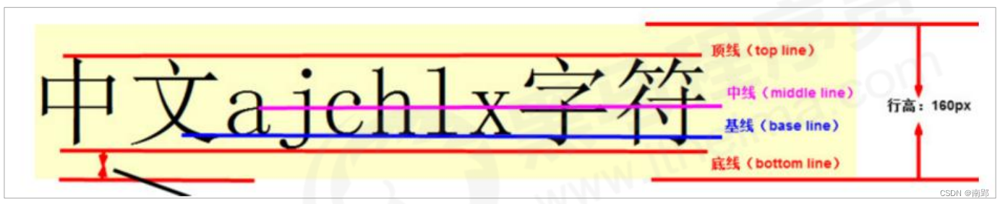
5.1 图片、表单和文字对齐
img {
vertical-align: middle;
}
li {
disaplay: inline-block;
vertical-align: middle;
}5.2 解决图片底部默认空白缝隙问题
bug ：图片底侧会有一个空白缝隙，原因是行内块元素会预留和文字的基线对齐。主要解决方法有两种：
- 给图片添加
vertical—align: middle top bottom;等。（提倡使用的） - 把图片转换为块级元素
display: block；
6. 溢出的文字省略号显示
6.1 单行文本溢出显示省略号
/*1·先强制一行内显示文本*/
white-space: nowrap;（默认normal 自动换行）
/*2·超出的部分隐藏*/
overflow: hidden;
/*3.文字用省略号替代超出的部分*/
text-overflow: ellipsis;6.2 多行文本溢出显示省略号
更推荐让后台人员来做这个效果，因为后台人员可以设置显示多少个字，操作更简单。
overflow: hidden;
text-overflow: ellipsis;
/* 弹性伸缩盒子模型显示 */
display: -webkit-box;
/* 限制在一个块元素显示的文本的行数 */
-webkit-line-clamp: 2;
/* 设置或检索伸缩盒对象的子元素的排列方式 */
-webkit-box-orient: vertical;7. 常见布局技巧
7.1 margin负值运用
- 解决相邻盒子之间的边框宽度加倍问题。 原理：让每个盒子压住前面的盒子，边框叠加。
ul li {
width: 150px;
height: 200px;
border: 1px solid red;
margin-left: -1px;
}- 鼠标移动边框颜色变化效果。鼠标经过某个盒子的时候，提高当前盒子的层级即可（如果没有定位，则加相对定位（保留位置）；如果有定位，则加z-index）
/*如果盒子li没有定位，则鼠标经过添加相对定位即可*/
ul li:hover {
position: relative;
border: 1px solid orange;
}
/*若盒子li都有定位，则使用 z-index 提高层级*/
ul li:hover {
z-index: 1;
border: 1px solid orange;
}7.2 文字围绕浮动元素
原理：浮动元素不会遮住文字。
div {
float: left;
}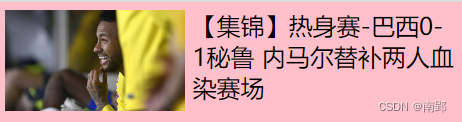
7.3 行内块巧妙运用
利用行内块元素做页码跳转组件：
- 把这些链接盒子转换为行内块， 之后给父级指定 text-align:center;
- 利用行内块元素中间有缝隙，并且给父级添加 text-align:center; 行内块元素会水平会居中
8. CSS 初始化
不同浏览器对有些标签的默认值是不同的，为了消除不同浏览器对 HTML 文本呈现的差异，照顾浏览器的兼容，我们需要对 CSS 初始化
简单理解： CSS 初始化是指重设浏览器的样式。（也称为 CSS reset ）每个网页都必须首先进行 CSS 初始化。 这里我们以京东 css 初始化代码为例。
Unicode 编码字体： 把中文字体的名称用相应的 Unicode 编码来代替，这样就可以有效的避免浏览器解释 CSS 代码时候出现乱码的问题。
比如： 黑体：\9ED1\4F53 宋体：\5B8B\4F53 微软雅黑：\5FAE\8F6F196C519ED1
二、HTML5新增特性
1. 新增的语义化标签
<header>：头部标签<nav>：导航标签<article>：内容标签<section>：定义文档某个区域<asider>：侧边栏标签<footer>：尾部标签
2. 新增的多媒体标签
2.1 视频<video>
所有浏览器支持 mp4 格式。
<video src="文件地址" controls="controls"></video>| 属性 | 值 | 描述 |
|---|---|---|
src |
url | 视频地址 |
autoplay |
autoplay | 视频就绪自动播放(google需要添加muted来实现) |
muted |
muted | 静音播放 |
controls |
controls | 显示播放控件 |
width |
像素 | 设置视频宽度 |
height |
像素 | 设置视频高度 |
loop |
loop | 设置视频循环播放 |
preload |
auto/none | 是否预加载，如有autoplay就忽略 |
poster |
imgurl | 加载等待的封面图片 |
2.2 音频<audio>
所有浏览器支持 mp3 格式。
<audio src="文件地址" controls="controls"></audio>| 属性 | 值 | 描述 |
|---|---|---|
src |
url | 音频的地址 |
autoplay |
autoplay | 音频就绪后自动播放 |
controls |
controls | 显示播放控件 |
loop |
loop | 设置循环播放 |
| 注：谷歌浏览器把音频和视频自动播放禁止了 |
3. 新增的input相关参数
3.1 新增的input类型
重点：number tel search
| 属性值 | 说明 |
|---|---|
type="email" |
输入必须为Email类型 |
type="url" |
输入必须为url类型 |
type="date" |
输入必须为日期类型 |
type="time" |
输入必须为时间类型 |
type="month" |
输入必须为月类型 |
type="week" |
输入必须为周类型 |
type="number" |
输入必须为数字类型 |
type="tel" |
输入必须为手机号码 |
type="search" |
搜索框 |
type="color" |
生成一个颜色选择表单 |
3.2 新增的表单属性
| 属性 | 值 | 说明 |
|---|---|---|
| required | required | 表单拥有该属性表示其内容不能为空，必填 |
| placeholder | 提示文本 | 表单的提示信息 |
| autofocus | autofocus | 自动聚焦属性，页面加载完成自动聚焦到指定表单 |
| autocomplete | off/on | 当用户在字段开始键入时，浏览器基于之前键入过的值，可以显示出在字段中填写的选项。默认状态为打开。需要放在表单内，同时加上name属性，同时成功提交 |
| multiple | multiple | 可以多选文件上传 |
| 可以通过以下设置方式修改placeholder里面的字体颜色： |
input::placeholder {
color: pink;
}三、CSS3 的新特性
1. 新增选择器
1.1 属性选择器
属性选择器可以根据元素特定属性的来选择元素。 这样就可以不用借助于类或者id选择器。
| 选择符 | 简介 |
|---|---|
E[att] |
选择具有att属性的E元素 |
E[att="val" |
选择具有att属性且属性值等于val的E元素 |
E[att^="val"] |
匹配具有att属性且值以val开头的E元素 |
E[att$="val"] |
匹配具有att属性且值以val结尾的E元素 |
E[att*="val"] |
匹配具有att属性且值中含有val的E元素 |
input[type="text"] {
color: green;
}
<input type="text">类选择器、属性选择器、伪类选择器的权重都为 10
1.2 结构伪类选择器
结构伪类选择器主要根据文档结构来选择器元素，常用于选择父级选择器里面的子元素。
| 选择符 | 简介 |
|---|---|
E: first-child |
匹配父元素中的第一个子元素,类型为E |
E: last-child |
匹配父元素中最后一个子元素，类型为E |
E: nth-child(n) |
匹配父元素中的第n个子元素，类型为E |
E: first-of-type |
匹配子元素E类型中的第一个 |
E: last-of-type |
匹配子元素E类型中的最后一个 |
E: nth-of-type(n) |
匹配子元素E类型中的第n个 |
重点：E: nth-child(n)
- n 可以是整数、关键字（
even/odd）、公式（n/2n/2n+1） - 如果 n 是公式，则从0开始计算，但是第 0 个元素或者超出了元素的个数会被忽略
| 公式 | 取值 |
|---|---|
| 2n | 偶数 |
| 2n-1 | 奇数 |
| 5n | 5的倍数 |
| n+5 | 5 6 7 8 … |
| -n+5 | 前五个 |
关于 nth-of-type 与 nth-child
div: nth-child会把所有的盒子都排列序号。执行的时候首先看:nth-child(1)， 之后回去看前面div，若选中的元素类型不符合，则不起效。div: nth-of-type会把指定元素的盒子排列序号。执行的时候首先看指定的元素类型div，之后回去看:nth-of-type(1)第几个孩子
区别：
- nth-child 对父元素里面所有孩子排序选择（序号是固定的）先找到第n个孩子，然后看看是否和E匹配
- nth-of-type 对父元素里面指定子元素进行排序选择。先去匹配E ，然后再根据E找第n个孩子
1.3 伪元素选择器（重点）
伪元素选择器可以帮助我们利用CSS创建新标签元素，而不需要HTML标签，从而简化HTML结构。
| 选择符 | 简介 |
|---|---|
::before |
在元素内部的前面插入内容 |
::after |
在元素内部的后面插入内容 |
注意：
- before 和 after 创建一个元素，但是属于行内元素
- 新创建的这个元素在文档树中是找不到的，所以我们称为伪元素
- 语法：
element::before {} - before 和 after 必须有 content 属性
- before 在父元素内容的前面创建元素， after 在父元素内容的后面插入元素
- 伪元素选择器和标签选择器一样，权重为 1
1.3.1 应用：伪元素字体图标
父级添加after伪元素
.clearfix::after {
content: '';
display: block;
height: 0;
clear: both;
visibility: hidden;
}父级添加双伪元素
.clearfix::before,
.clearfix::after {
content: '';
display: block;
}
.clearfix::after {
clear: both;
}2. 盒子属性
CSS3中可以通过 box-sizing 来指定盒模型，有2个值：即可指定为 content-box，border-box ，这样我们计算盒子大小的方式就发生了改变。
可以分成两种情况：
box-sizing：content-box盒子大小为 width + padding + border （以前默认的）box-sizing: border-box盒子大小为 width 如果盒子模型我们改为了 box-sizing： border-box ，那padding 和 border就不会撑大盒子了（前提 padding 和 border 不会超过 width 宽度）
3. transition过渡（重点）
过渡（transition）是CSS3中具有颠覆性的特征之一，我们可以在不使用Flash动画或JavaScript的情况下，当元素从一种样式变换为另一种样式时为元素添加效果。
过渡动画：是从一个状态渐渐的过渡到另外一个状态 可以让我们页面更好看，更动感十足，虽然低版本浏览器不支持（ie9以下版本）但是不会影响页面布局。
我们现在经常和 :hover 一起搭配使用。
transition: 要过渡的属性 花费时间 运动曲线 何时开始;记住过渡的使用口诀： 谁做过渡给谁加
属性：想要变化的css属性，宽度高度背景颜色内外边距都可以。如果想要所有的属性都变化过渡，写一个all就可以。
花费时间：单位是秒（必须写单位）比如 0.5s
运动曲线：默认是ease（可以省略）
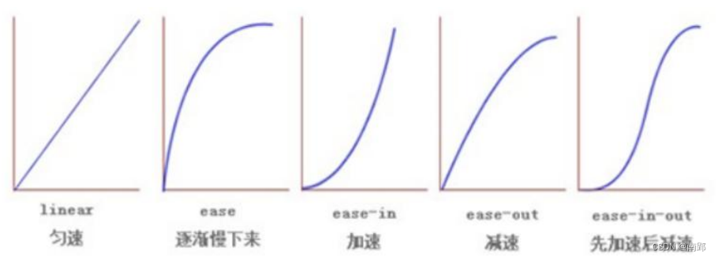何时开始：单位是秒（必须写单位）可以设置延迟触发时间默认是0s（可以省略）
4. CSS3 其他特性（了解）
4.1 CSS3 滤镜 filter
ilter CSS属性将模糊或颜色偏移等图形效果应用于元素。
filter: 函数();例如： filter： blur(5px); blur 模糊处理数值越大越模糊
4.2 CSS3 calc 函数
此 CSS 函数让你在声明CSS属性值时执行一些计算。
width: calc(100%-30px);
/* 子盒子永远比父盒子小30px */括号里面可以使用 + - * / 来进行计算。
5. 2D 转换
转换（transform）是 CSS3 中具有颠覆性的特征之一，可以实现元素的位移、旋转、缩放等效果。
转换可以理解为变形。
- 移动：
translate - 旋转：
rotate - 缩放：
scale
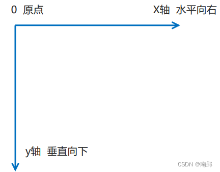
5.1 2D 转换之移动 translate
2D移动是2D转换里面的一种功能，可以改变元素在页面中的位置，类似定位。
语法：
transform: translate(x, y);
transform: translateX(x);
transform: translateY(y);- 定义 2D 转换中的移动，沿着X和Y轴移动元素
- translate 最大的优点：不会影响到其他元素的位置
- 参数
x, y可以是百分数，translate 中的百分比单位是相对于 自身元素 的宽度或高度的百分比translate:(50%，50%) - 对行内标签没有效果
盒子实现水平和垂直居中
/*子绝父相*/
position: absolute;
top: 50%;
left: 50%;
transform: translate(-50%, -50%);5.2 2D 转换之旋转 rotate
2D旋转指的是让元素在2维平面内顺时针旋转或者逆时针旋转。
语法：
transform: rotate(45deg);- 值为正数则顺时针旋转，为负数则逆时针旋转。
- 默认旋转的中心点是元素的中心点
5.2.1 2D 转换中心点 transform-origin
我们可以通过设置 transform-origin 设置元素转换的中心点。
语法：
transform-origin: x y;- x y 默认转换的中心点是元素的中心点（50% 50%）
- 还可以给 x y 设置像素或者方位名词（top bottom left right center）
5.3 2D 转换之缩放scale
缩放，顾名思义，可以放大和缩小。 只要给元素添加上了这个属性就能控制它放大还是缩小。
语法：
transform: scale(x, y);- 参数大于
1则放大，小于1则缩小。 x, y不跟单位的话，是指缩放的倍数。transform: scale(2)：只写一个参数，第二个参数则和第一个参数一样，相当于scale(2,2)- 可以配合
transform-origin使用，改变缩放中心。 - scale 的优势：不占空间
5.4 2D 转换综合写法
- 同时使用多个转换，其格式为：
transform: translate() rotate() scale(); - 其顺序会影响转换的效果。（如先旋转会改变坐标轴方向）
- 当我们同时有位移和其他属性的时候，记得要将位移放到最前。
6. 动画
动画( animation ) 是 CSS3 中具有颠覆性的特征之一，可通过设置多个节点来精确控制一个或一组动画，常用来实现复杂的动画效果。 相比较过渡，动画可以实现更多变化，更多控制，连续自动播放等效果。
6.1 动画的基本使用
分为两步：
- 定义动画 (动画序列
%α) - 使用动画
/* 1. 定义动画 */ @keyframes move { /*开始状态*/ 0% { transform: translateX(0px); } /*结束状态*/ 100% { transform: translateX(1000px); } } div { width: 200px; height: 200px; background-color: pink; /* 2. 调用动画 */ /* 动画名称 */ animation-name: move; /* 持续时间 */ animation-duration: 5s; }
动画序列
- 0% 是动画的开始，100% 是动画的完成。这样的规则就是动画序列。
- 在
@keyframes中规定某项 CSS 样式，就能创建由当前样式逐渐改为新样式的动画效果。 - 一个元素可以添加多个动画，调用时用逗号分隔。
animation: bear .4s, move 3s; - 请用百分比来规定变化发生的时间，或用关键词”from”和“to”，等同于0%和100%。
注意：
- 可以做多个状态的变化
keyframes关键帧 - 百分比必须是整数
- 百分比是总时间
animation-duration的划分
6.2 动画常用属性
| 属性 | 描述 |
|---|---|
@keyframes |
规定动画。 |
animation |
所有动画属性的简写属性，除了animation-play-state属性。 |
animation-name |
规定@keyframes动画的名称。(必须的) |
animation-duration |
规定动画完成一个周期所花费的秒或毫秒，默认是0。(必须的) |
animation-timing-function |
规定动画的速度曲线，默认是“ease” . |
animation-delay |
规定动画何时开始，默认是0. |
animation-iteration-count |
规定动画被播放的次数，默认是1，还有infinite |
animation-direction |
规定动画是否在下一周期逆向播放，默认是 “normal”,alternate逆播放 |
animation-play-state |
规定动画是否正在运行或暂停。默认是”running”,还有”paused”. |
animation-fill-mode |
规定动画结束后状态,保持forwards回到起始backwards |
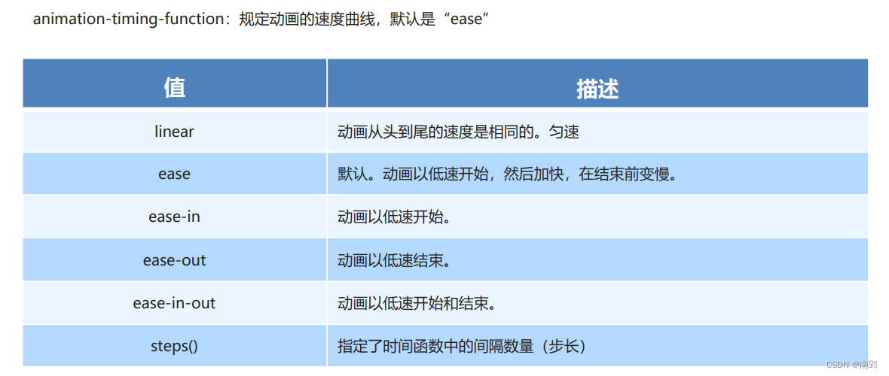
动画属性简写
animation: 动画名称(必) 持续时间(必) 运动曲线 何时开始 播放次数 是否反方向 动画起始或者结束的状态;animation: myfirst 5s linear 2s infinite alternate;- 简写属性里面不包含
animation-play-state - 暂停动画:
animation-play-state: puased; - 经常和鼠标经过等其他配合使用想要动画走回来，而不是直接跳回来:
animation-direction: alternate - 盒子动画结束后，停在结束位置:
animation-fill-mode: forwards
7. 3D 转换
三维坐标系其实就是指立体空间，立体空间是由3个轴共同组成的。
- x轴：水平向右 注意： x 右边是正值，左边是负值
- y轴：垂直向下 注意： y 下面是正值，上面是负值
- z轴：垂直屏幕 注意： 往外面是正值，往里面是负值
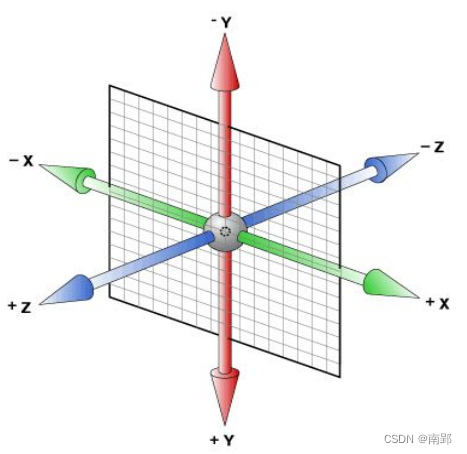
7.1 3D 移动 translate3d
3D移动在2D移动的基础上多加了一个可以移动的方向，就是z轴方向。
transform:translateX(100px)：仅仅是在x轴上移动transform:translateY(100px)：仅仅是在Y轴上移动transform:translateZ(100px)：仅仅是在Z轴上移动（注意：translateZ一般用px单位）transform:translate3d(x,y,z)：其中 x、y、z 分别指要移动的轴的方向的距离
因为z轴是垂直屏幕，由里指向外面，所以默认是看不到元素在z轴的方向上移动
7.2 透视 perspective
在2D平面产生近大远小视觉立体，但是只是效果二维的
- 如果想要在网页产生3D效果需要透视（理解成3D物体投影在2D平面内）。
- 模拟人类的视觉位置，可认为安排一只眼睛去看
- 透视也称为视距：视距就是人的眼睛到屏幕的距离
- 距离视觉点越近的在电脑平面成像越大，越远成像越小
- 透视的单位是像素
透视写在被观察元素的父盒子上面的
d：就是视距，视距就是一个距离人的眼睛到屏幕的距离。视距越小，看到的物体越大。
z：就是 z轴，物体距离屏幕的距离，z轴越大（正值） 我们看到的物体就越大。
d 需要>= z，否则无法显示
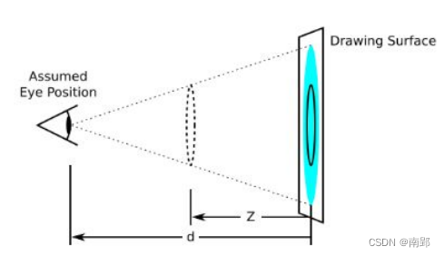
7.3 3D 旋转 rotate3d
3D旋转指可以让元素在三维平面内沿着 x轴，y轴，z轴（原点在元素中心位置）或者自定义轴进行旋转。
transform:rotateX(45deg)：沿着x轴正方向旋转 45度transform:rotateY(45deg)：沿着y轴正方向旋转 45degtransform:rotateZ(45deg)：沿着Z轴正方向旋转 45degtransform:rotate3d(x,y,z,deg)： 沿着自定义轴旋转 deg为角度（了解即可）。- xyz是表示旋转轴的矢量
transform:rotate3d(1,0,0,45deg)就是沿着x轴旋转 45degtransform:rotate3d(1,1,0,45deg)就是沿着对角线旋转 45deg
旋转方向判断——左手准则
- 左手拇指指向 x/y/z 轴的正方向
- 其余手指的弯曲方向就是该元素沿着 x/y/z 轴旋转的方向（正值）
7.4 3D 呈现 transfrom-style
控制子元素是否开启三维立体环境。
transform-style: flat;：子元素不开启3D立体空间（默认）transform-style: preserve-3d;：子元素开启立体空间- 代码写给父级，但是影响的是子盒子
- 这个属性很重要，后面必用
7.5 案例
7.5.1 两面魔方翻转
HTML：
<div class="box">
<div class="front">你好呀</div>
<div class="back">你是谁</div>
</div>CSS：
.box {
position: relative;
width: 200px;
height: 100px;
margin: 100px auto;
transition: all .6s;
transform-style: preserve-3d;
}
.box:hover {
transform: rotateX(90deg);
}
.front,
.back {
position: absolute;
top: 0;
left: 0;
width: 100%;
height: 100%;
line-height: 100px;
text-align: center;
font-size: 16px;
color: white;
backface-visibility: hidden;
}
.front {
background-color: pink;
/* 重要！！！应该向前移动front，这样box的旋转中心轴就在立方体中间了 */
transform: translateZ(50px);
}
.back {
background-color: purple;
/* 不能先旋转再移动 */
transform: translateY(50px) rotateX(-90deg);
}- 旋转会改变 x/y/z 轴的方向
7.5.2 旋转木马
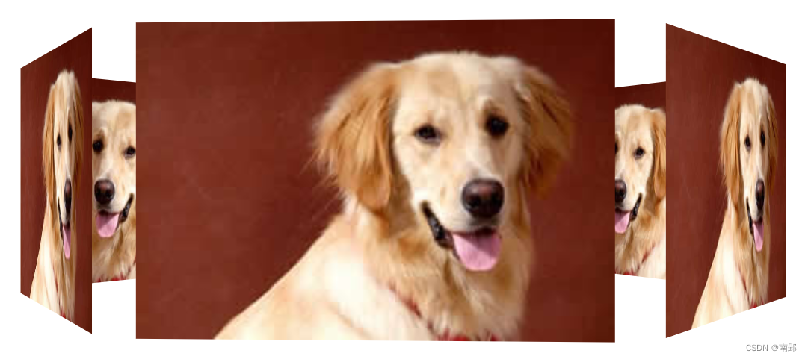
HTML：
<section>
<div></div>
<div></div>
<div></div>
<div></div>
<div></div>
<div></div>
</section>CSS：
body {
perspective: 1000px;
}
section {
position: relative;
width: 300px;
height: 200px;
margin: 150px auto;
transform-style: preserve-3d;
animation: rotate 7s linear infinite;
background: url(media/pig.jpg) no-repeat;
}
section:hover {
animation-play-state: paused;
}
@keyframes rotate {
0% {}
100% {
transform: rotateY(360deg);
}
}
div {
position: absolute;
top: 0;
left: 0;
width: 100%;
height: 100%;
background: url(media/dog.jpg) no-repeat;
}
div:nth-child(1) {
transform: translateZ(300px);
}
div:nth-child(2) {
/* 先旋转再移动 */
/* 这里旋转的时候z轴方向也跟着旋转，因此还是300px */
transform: rotateY(60deg) translateZ(300px);
}
div:nth-child(3) {
transform: rotateY(120deg) translateZ(300px);
}
div:nth-child(4) {
transform: rotateY(180deg) translateZ(300px);
}
div:nth-child(5) {
transform: rotateY(240deg) translateZ(300px);
}
div:nth-child(6) {
transform: rotateY(300deg) translateZ(300px);
}四、品优购项目
1. 常用模块类名命名
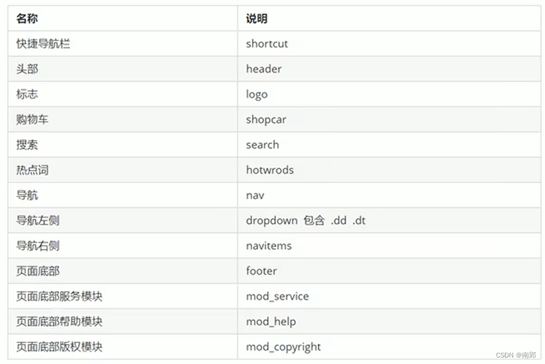
2. 模块化开发
2.1 初始化文件
一些页面样式的初始化统一写入 base.css 文件中。
2.2 公共样式文件
有些样式和结构在很多页面都会出现，比如页面头部和底部，大部分页面都有。此时，可以把这些结构和样式单独作为一个模块 common.css ，然后重复使用。
common.css 公共样式里面包含版心宽度、清除浮动、页面文字颜色等公共样式。
3. 网站 favicon 图标
favicon.ico 一般用于作为缩略的网站标志，它显示在浏览器的地址栏或者标签上。
- 制作 favicon 图标。把 png 图片转换为 ico 图标，这需要借助于第三方转换网站，例如比特虫：http://www.bitbug.net/
- 把 favicon 图标放到项目文件根目录下
- 在html 页面里面的
<head></head>元素之间引入代码。<link rel="shortcut icon" href="favicon.ico" type="image/x-icon"/>
4. LOGO SEO 优化
- logo 里面首先放一个
h1标签，目的是为了提权，告诉搜索引擎，这个地方很重要。 - h1 里面再放一个
a链接，可以返回首页的，把 logo 的背景图片给链接即可。 - 为了搜索引擎收录我们，我们链接里面要放文字（网站名称），但是文字不要显示出来。
- 方法1：
text-indent移到盒子外面（text-indent: -9999px) ，然后overflow:hidden，淘宝的做法。 - 方法2：直接给
font-size: 0;就看不到文字了，京东的做法。
- 方法1：
- 最后给链接一个
title属性，这样鼠标放到 logo 上就可以看到提示文字了。
5. 一些tips
- 若要让相邻两个文字中间有一段距离，直接用
（空格符）即可。 - nav导航栏处的dropdown盒子有讲究，它和下面的盒子是一体的，包含.dt 和.dd两个盒子
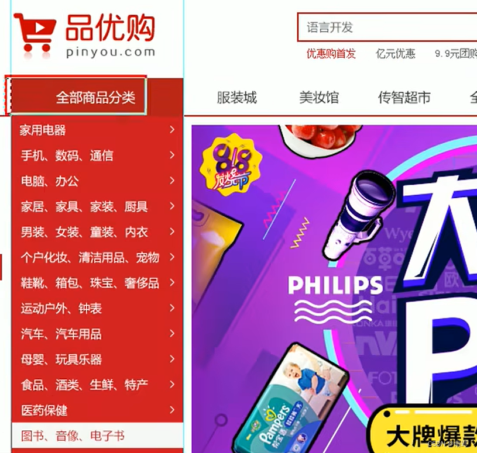
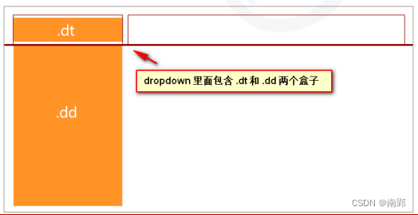
两行文字不需要分为两个
<p>，可以直接在中间加<br>即可实现换行。若要增加两行文字间的距离，可以增大line-height属性即可。一行文字中有文字需要加粗，则给需要加粗的文字套一个
<strong></strong>多个
li排成的多行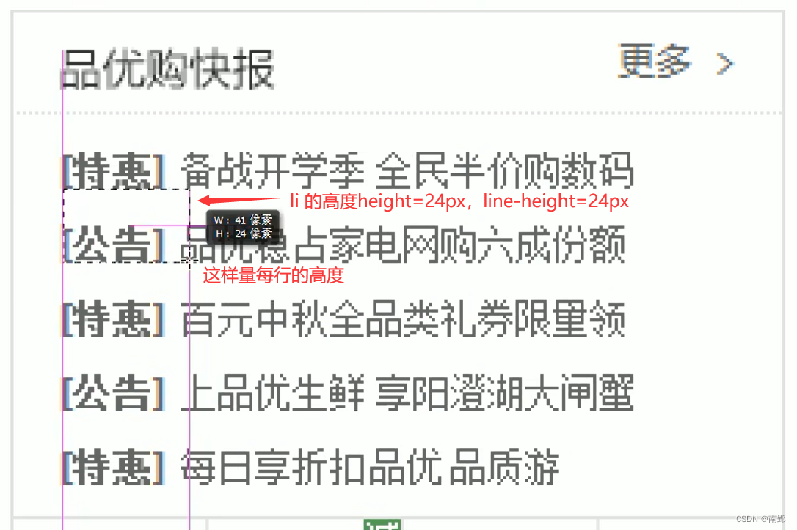text-align属性的巧用：
在一个 div 中包含 i（行内元素），此时对 div 赋予text-align: center，i 也会在 div 内水平居中；
在一个 div 中包含 img（行内块元素），此时对 div 赋予text-align: center，img 也会在 div 内水平居中；
在一个 div 中包含 p（块元素），此时对 div 赋予text-align: center，p 会继承该属性，内容在标签内水平居中。Tab栏原理-布局需求
要求选项卡个数要和内容个数一致，tab_content 里面包含 内容部分。
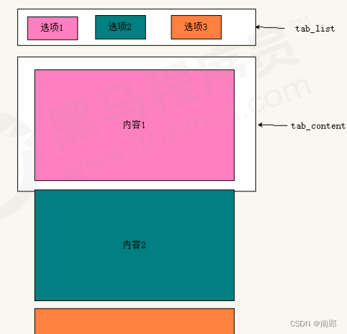vertical-align: middle;可以使行内块元素与文字对齐